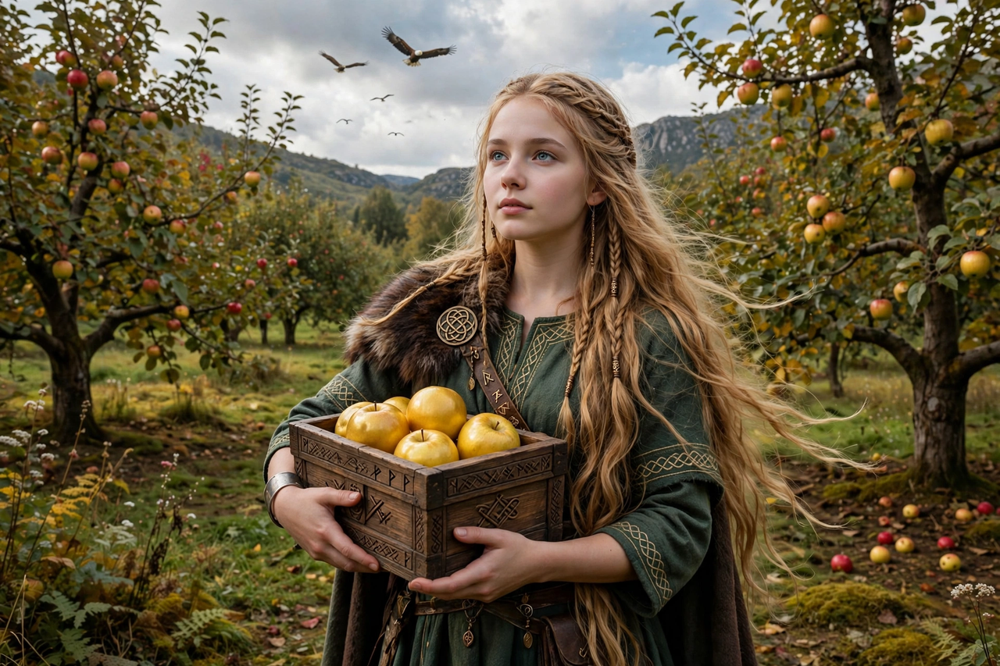

From Wikipedia, the free encyclopedia
| Idunn | |
|---|---|
| Affiliation | Æsir; keeper of the apples of youth |
| Spouse | Bragi, god of poetry |
| Charge | The golden apples that keep the gods young |
| Famous tale | Abducted by the giant Thjazi; rescued by Loki as a falcon, Idunn as a nut |

Idunn (Old Norse Iðunn) is the goddess of Norse mythology who keeps the golden apples of youth, from whose eating the gods derive their perpetual vigour: when the apples fail, the Æsir grey and weaken. Wife of Bragi the poet, she is less a personality than a function in the surviving myths — the keeper of Asgard's most strategic resource — which is exactly why she is the object of its best abduction story, the tale with which Snorri opens the Skáldskaparmál.
Loki, captured by the giant Thjazi in eagle form and tortured by being dragged through the treetops, bought his freedom by promising to deliver Idunn and her apples. He lured her out of Asgard with a tale of finer apples in the wood, and Thjazi carried her off to Thrymheim. The gods greyed; the assembly, tracing the theft to Loki, threatened him with death unless he fetched her back. In Freyja's falcon cloak he flew to Thrymheim, turned Idunn into a nut, and raced home with Thjazi's eagle-wings fanning the wind behind him; the gods lit fires on Asgard's walls that singed the giant into their hands, and killed him — then had to compensate his daughter Skadi, whose marriage to Njord follows from the affair. The apples are restored; youth returns; and the story shows its structure plainly: the gods are mortal by default, and immortality is a fruit that can be stolen.
Norse mythology · Bragi · Loki · Freya